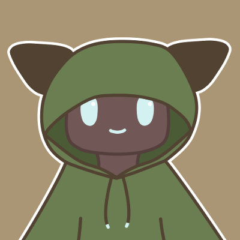

プロフィール

名前 ：煮る茶（にるちゃ）
誕生日 ：10/4
年齢 ：23歳
種族 ：お茶
生息地域：草むら・冷蔵庫
好きな事：ゲーム・創作活動
自己紹介
初めまして！お茶の煮る茶と申します！
趣味でゲームを遊んだり、動画を制作してYouTubeに投稿したりしています！
創作活動も好きで、このサイトやキャラクターも自分で作っています！
活動理念
【まずは自分で挑戦してみる】
難しいことや未知のことに出会うと、つい誰かに頼りたくなってしまいますよね。
それでも、まずは自分自身で挑戦してみることを大切にしています。
もちろん、自分で挑戦することは簡単ではありません。
困難にぶつかることもあれば、失敗してしまうこともあります。
しかし、その過程の中にこそ多くの学びがあると私は考えています。
挑戦の積み重ねは少しずつ知識や経験となり、やがて自分の力へと変わっていきます。
そう信じて、今日も小さな一歩を積み重ねています。
活動のきっかけ
幼い頃に父親のパソコンでゲームに触れたことが、今の活動の原点です。
その経験をきっかけにコンピューターに興味を持つようになり、
自然とゲームや作品作りが好きになっていきました。
もともとお絵描きや積み木遊びなど、自分で何かを作ることが好きだったこともあり、
その楽しさは現在の創作活動へとつながっています。
また、YouTubeを知ったきっかけは、友人に3DSで動画を見せてもらったことです。
それ以来、さまざまなクリエイターの作品に触れ、多くの刺激を受けてきました。
そうした経験の積み重ねが、現在の動画投稿活動につながっています。
YouTubeでの活動目標
「動画の幅を広げる」
チャンネル登録をしても見られる動画が少ないと、少し物足りなく感じてしまいます。
まずは動画数を増やし、チャンネルの土台を少しずつ整えていきます。
「見やすい動画を作る」
面白さだけでなく見やすさも大切にしながら、動画を編集していきます。
少しずつより良い動画を届けられるよう、工夫を続けていきます。
「収益化を目指して！」
まずは収益化に向けた第一歩として、登録者数500人を目指して活動していきます。
将来的には、動画制作を仕事の一つとして続けていけるようになることを目指します。
煮る茶のアカウント一覧
X（Twitter）では、日常のことや活動に関するお知らせなどを発信しています！